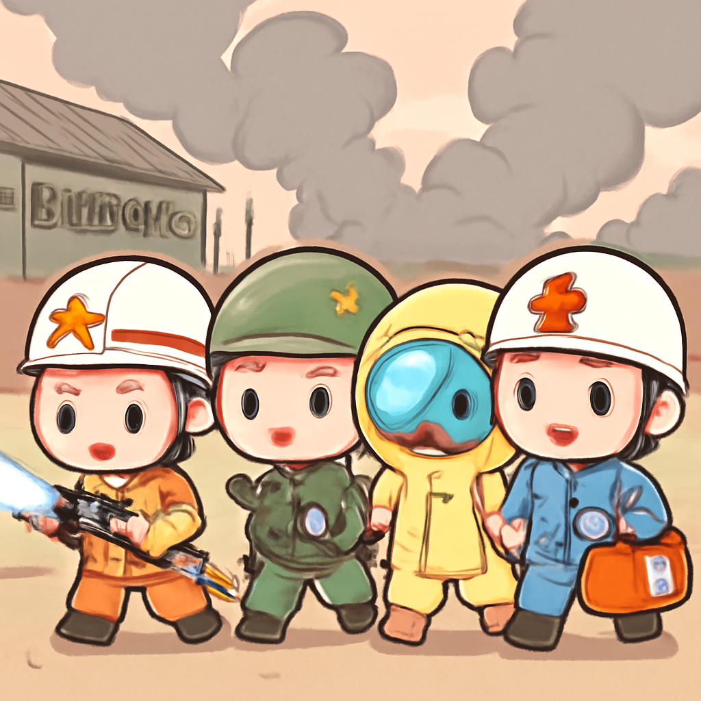

其一 · 美國莫斯科 · 美國特使與普丁會談烏克蘭問題
美國特使在莫斯科與普丁討論烏克蘭局勢。
在俄羅斯莫斯科，普丁與美國特使史蒂夫·維特科夫和賈瑞德·庫什納會面，討論烏克蘭衝突。普丁表示當前局勢「並不簡單」，這次會談可能是尋求和平的契機，對於持續升溫的局勢，大家都在期待一絲曙光。希望他們的會談不會像我對於健身房的持續承諾一樣，總是不了了之！
🔗 原始新聞 ↗
2026-09-06 · 以古觀今，以笑抗愁
美國特使在莫斯科與普丁討論烏克蘭局勢。
在俄羅斯莫斯科，普丁與美國特使史蒂夫·維特科夫和賈瑞德·庫什納會面，討論烏克蘭衝突。普丁表示當前局勢「並不簡單」，這次會談可能是尋求和平的契機，對於持續升溫的局勢，大家都在期待一絲曙光。希望他們的會談不會像我對於健身房的持續承諾一樣，總是不了了之！
🔗 原始新聞 ↗
伊朗與美國船隻互相攻擊，局勢緊張升級。
最近，在伊朗海域，美國軍方對三艘伊朗油輪發動打擊，作為報復。而伊朗則反擊，聲稱襲擊了三艘與美國有關的船隻。這場攻擊讓波斯灣的緊張局勢再度升高，讓人不禁擔心，這不是一場海上遊戲，而是更大的衝突的前奏。希望不要演變成海上版的《絕命毒師》！
🔗 原始新聞 ↗
玻利維亞軍營爆炸事故，死亡人數可能上升。

在玻利維亞維亞查，發生一起軍營爆炸事件，當局已確認至少兩人喪生，並警告民眾遠離爆炸地點以防止進一步傷亡。這起事件再一次讓人警覺，國家安全問題不容忽視。希望這次爆炸不會成為新的「國際新聞熱門話題」，要不然真是讓人心頭一緊！
🔗 原始新聞 ↗
尼泊爾遭遇洪災，救援人員已找到倖存者。
尼泊爾最近遭受嚴重洪災，超過1300人遇難，數千人失蹤。不過，救援人員在一條隧道中找到了一些倖存者，讓大家重燃希望。雖然面對的挑戰嚴峻，但人們的團結精神依然堅韌，讓人感受到生命的韌性。希望這場災難能成為重建與希望的契機，而不是壞消息的代名詞！
🔗 原始新聞 ↗
德國極右派政黨在選舉中可能創造歷史記錄。
在德國，極右派政黨在薩克森-安哈特州的選舉中可能獲得歷史性支持，這讓人不禁擔心政治極端化的回潮。這次選舉結果可能影響整個德國的政治格局，令人深思。希望大家能記得，選票可不是拿來開玩笑的，政治可不是一場選秀節目！
🔗 原始新聞 ↗